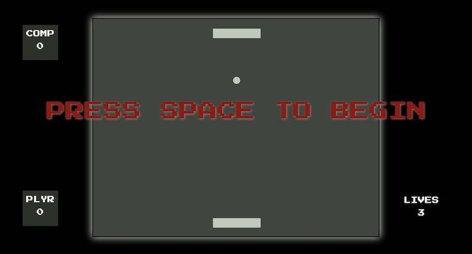

My name is Zach, I am a Chemical Engineering student at the University of Illinois at Chicago. In my free time I enjoy working on motorcycles, taking apart electronics, and learning new things. I created this website as a learning project in web development.
Education
I started UIC in the fall of 2016, pursuing a bachlors degree in Kinesiology. After taking Organic Chemistry and Calculus 3, I realized that I need something with a larger element of problem solving. I realized that I wanted to be an engineer. After studing Jewish theology in Israel for 2 years, I am now pursuing a BS in Chemical Engineering with a minor in Computer Science.


As I matured in college, I realized that a central aspect of my identity was disproportionately underdeveloped. As an orthodox Jew I felt like I wasn't living life with integrity. I left school and traveled to Israel, to Machon Yaakov, to study Jewish theology for a couple of years (2019-2021). Over the last two years I delved deep into Jewish law, western morals, and family.
Projects
Royal Flush - an app idea
Royal Flush was an app I made to learn Java and mobile development. I used videos on "LinkedIn Learning", as well as online forums to master the skills required. The app is essentially a map that displays gender neutral, and accessible, bathrooms to the user. This app was meant for use predominantly on a college campus, where these kinds of bathrooms are prevalent. The bathroom data was stored in a Google Firestore Database. (Hover over the images)

This screen would display the map, the user could then click on a marker and it would display a short description of the bathroom. The user could then press the navigation button and get directions in google maps.

Once the user was safe and sound in the bathroom, they could then enjoy this jokes screen. This screen would display 20 random new jokes upon reload of the app.

This screen allows a user to send anonymous messages to other users within 2 miles of their location. I thought that It would be very cool to give students on campus a public announcement board, of sorts, which can only be used while in range.
Pong: A JavaScript Challenge
After building this website, I realized that I had not gotten as much practice with JavaScript as I had hoped. I decided that I'd build a simple pong game as a means to get to know some of the functions, syntax, and techniques unique to JavaScript. The game I ended up building has progressive levels that get harder and harder along with a health system that keeps track of how many lives the player has left. I defiantly feel like this project did the job. I learned a lot and got a better understanding of what JavaScript can do!
CLICK ME TO PLAY!Hobbies

In the spring of 2018, I bought my first motorcycle. I fell in love with riding and I would ride it everywhere. When I rode it to school it would wake me up in the morning and get me ready to learn. When I rode my bike home all the stress of that day would melt away. After a few months, my natural inclination towards fixing and improving things kicked in. My first project was to change the clutch of the bike. Since the bike was already 20 years old the clutch had worn and had begun to slip.

After watching instructional videos and reading the shop manual I began the job. This was the first major repair project I had ever done, and it took much longer than expected. Over the following months I would tinker with my bike on Sundays, culminating with me disassembling my friends' bike, that didn't run, and getting it running again. The image to the left shows one of my projects where I changed out the cam chain tensioner, which sets the timing of the engine. With my growing confidence, and love for working on physical projects, I would fix things around the house whenever needed.

While studying abroad in Israel, my friend's room flooded and submerged my friend's MacBook underwater. After retrieving the laptop, he didn't know what to do. Being in a foreign country he didn't know who he could get to fix his water damaged laptop. Having nowhere else to turn he asked me to try and fix it. I told him I was almost positive I wouldn't be able to, but I would give it a try. The process stared from the beginning, research on "how does water damage ruin electronics", reading various articles and developing a game plan. I decided that the best I could do is to thoroughly clean off any corrosion on all of the connections with alcohol. That is what I did. After gingerly disassembling the laptop, cleaning is, and then putting it back together. I held my breath as I powered it up… IT WORKED!